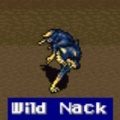
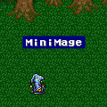
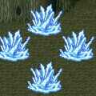

Blue Magic
อาชีพ "Blue Mage" สามารถใช้เวทย์ Learning ได้
เวทย์ Learning สามารถเรียนรู้ได้จากการโดนศัตรูโจมตีด้วยท่าพิเศษ
ซึ่งผู้ที่โดนโจมตีด้วยท่าพิเศษนั้น ต้องเป็นอาชีพ "Blue Mage"
หรือผู้ที่สวมใส่ความสามาร "Learning" เท่านั้น และต้องมีชีวิตจนจบการต่อสู้ด้วย
เช่น หากโดน "Lv5 Death" ตัวละครจะตาย ทำให้ไม่สามารถเรียนรู้เวทย์นี้ได้
จำเป็นต้องชุบชีวิตขึ้นมาก่อนจบการต่อสู้ จึงจะสามารถเรียนรู้เวทย์นั้นได้
Blue Magic
มีทั้งหมด 30 เวทย์ ดังนี้
# Click ที่ชื่อเวทย์นั้นๆ
เพื่อดูรายละเอียด #
Goblin
Punch
MP 0
สร้างความเสียหายอย่างรุนแรง หากผู้ใช้มี Level เท่ากับศัตรู /Single
Learn from
พบได้บริเวณ หน้าถ้ำโจรสลัด
Vampire
(Red Feast)
MP 2
ดูด HP จากศัตรู สร้างความเสียหาย = (Max HP - Current HP)/2
Learn from
พบได้บริเวณ ในถ้ำโจรสลัด
Aero
MP 4
Wind Elemental Attack / Single
Learn from
พบได้บริเวณ วิหารแห่งลม (Wind Shine)
พบได้บริเวณ ปราสาท Kanak
Flash
MP 7
ทำให้ศัตรูติดสถานะ "ตาบอด" ทุกตัว (Blinds /All)
Learn from
พบได้บริเวณ ภูเขาที่ไปเอามังกร (North Mountain)
Note : Blocks จะมี MP ไม่เพียงพอที่จะใช้ Flash จำเป็นต้องให้
Ether กับมัน เพื่อเพิ่ม MP ให้มัน
พบได้บริเวณ เรือกลไฟ
Frog
Song (Toad Song)
MP 5
ทำให้ศัตรูเปลี่ยนสถานะกลายเป็น "กบ" ทุกตัว (Frog /All)
Learn from
พบได้บริเวณ ทางเดินใต้ดินปราสาท Walz (Side-Quest
"Shiva")
????
MP 3
โจมตีศัตรูเท่ากับ Max HP - Current HP /Single
Learn from

พบได้บริเวณ ป่าใกล้เมือง Kanak
Exploder
MP 1
ระเบิดตัวเองใส่ศัตรู 1 ตัว พลังโจมตีเท่ากับ HP ที่เหลือของผู้ใช้
Learn from
พบได้บริเวณ เรือกลไฟ
Note : สามารถเจอ Motor Trap ได้ หลังจากกำจัด Defeater
และต้องใช้สายฟ้าโจมตีใส่ Motor Trap มันจึงจะใช้ Exploder
พบได้บริเวณ ใกล้ๆ หมู่บ้าน Jacole, Ruined City
Aero 2
MP 10
Wind Elemental Attack /Single (พลังโจมตีเป็น
3 เท่าของ Aero)
Learn from
พบได้บริเวณ ปราสาท Kanak ก่อนการระเบิด
 พบได้บริเวณ ภายในห้องสมุด
พบได้บริเวณ ภายในห้องสมุด
Death
Claw (Doom Claw)
MP 21
ทำให้ HP ของศัตรูเหลือเพียงตัวเลขหลักเดียว (1-9) และติดอัมพาต
/Single
Learn from
พบได้บริเวณ ปราสาท Kanak ก่อนการระเบิด
Note : สามารถเจอ Iron Claw ได้ หลังจากที่โจมตี Sergeant
ไปได้ระยะหนึ่ง
พบได้บริเวณ หน้าปราสาท Exdeath (Galuf World)
* Note : วิธีเก็บ Death Claw จาก Rock Brain ต้องใช้คำสั่ง
Control ของ Mediator
Aqua
Rake
MP 38
Water Elemental Attack /All
Learn from
พบได้บริเวณ ทะเลทรายใกล้เมือง Kanak
Fusion
(Pep up)
MP 13
เสียสละตัวเอง ฟื้นฟู HP ให้เป้าหมาย 1 คน จนเต็ม
Learn from
พบได้บริเวณ ป่ารอบๆ ห้องสมุด
* Note : วิธีเก็บ Fusion จาก Mithril Dragon ต้องใช้คำสั่ง
Control ของ Mediator
L5 Doom
MP 22
ใช้เวทย์ Doom ฆ่าศัตรูทุกตัว ที่มี Level หารด้วย 5 ลงตัว
Learn from
พบได้บริเวณ ภายในห้องสมุด
* Note : เวทย์ Lx ต่างๆ เรียนรู้ได้จาก Ixecrator
Moon
Flute
MP 3
ทำให้ศัตรูติดสถานะ "บ้าคลั่ง" เพิ่มพลังโจมตี แต่โจมตีอัตโนมัติ
/All
Learn from
พบได้บริเวณ ภายในห้องสมุด
Hammer
(Magic Hammer)
MP 3
ลด MP ของศัตรูลงครึ่งหนึ่ง /Single
Learn from
 พบได้บริเวณ ภายในห้องสมุด
พบได้บริเวณ ภายในห้องสมุด
พบได้บริเวณ Hiryuu Valley (Galuf World)
* Note : วิธีเก็บ Hammer จาก Drippy ต้องใช้คำสั่ง Control
ของ Mediator
Dark
Shock (Black Shock)
MP 27
ลด Level ของเป้าหมายลดครึ่งหนึ่ง /Single
Learn from
พบได้บริเวณ ใกล้ๆ หมู่บ้าน Istory
พบได้บริเวณ หน้าปราสาท Exdeath (Galuf World)
Missile
MP 7
ลด HP ของเป้าหมายลง 3 ใน 4 /Single
Learn from
พบได้บริเวณ ยานเหาะโบราณ (Boss)
Emission
(Burn Ray)
MP 5
Fire Element Attack /Single
Learn from
 พบได้บริเวณ ยานเหาะโบราณ (Boss)
พบได้บริเวณ ยานเหาะโบราณ (Boss)
Blowfish
MP : 25
สร้างความเสียหายให้เป้าหมาย 1,000 หน่วย อย่างแน่นอน /Single
Learn from
พบได้บริเวณ บนยานเหาะ (Lonka Ruins)
Whirlwind
MP : 28
ฟื้นฟู HP ให้สมาชิกทุกคนในกลุ่ม เท่ากับ HP ที่ผู้ใช้มีในปัจจุบัน
Learn from
พบได้บริเวณ บนยานเหาะ (Lonka Ruins)
Time
Slip
MP : 9
ทำให้เป้าหมายติดสถานะ "หลับ" และ "แก่เฒ่า"
Learn from
พบได้บริเวณ หอคอย Barrier (Galuf World)
L3 Flare
MP : 18
ใช้เวทย์ Flare กับศัตรูทุกตัวที่มี Level หารด้วย 3 ลงตัว
Learn from
พบได้บริเวณ เฝ้าหีบสมบัติในหอคอย Barrier (Galuf World)
* Note : ดูวิธีเรียนรู้จาก Red Dragon ได้ ที่นี่
* Note : เวทย์ Lx ต่างๆ เรียนรู้ได้จาก Ixecrator
L4
Quarter
MP : 9
ลด HP ของเป้าหมายลง 3 ใน 4 เป้าหมายคือ ศัตรูทุกตัวที่มี Level
หารด้วย 4 ลงตัว
Learn from
พบได้บริเวณ หอคอย Barrier (Galuf World)
* Note : เวทย์ Lx ต่างๆ เรียนรู้ได้จาก Ixecrator
L2 Old
MP : 11
ทำให้ศัตรูติดสถานะ "แก่เฒ่า" เป้าหมายคือ ศัตรูทุกตัวที่มี
Level หารด้วย 2 ลงตัว
Learn from
พบได้บริเวณ หอคอย Barrier (Galuf World)
* Note : ดูวิธีเรียนรู้จาก Tricker ได้ ที่นี่
* Note : เวทย์ Lx ต่างๆ เรียนรู้ได้จาก Ixecrator
Tiny
Song (Little Song)
MP : 5
ทำให้ศัตรูติดสถานะ "ตัวเล็ก" /Single
Learn from

พบได้บริเวณ ภายในป่า Mua
Aero 3
MP : 24
Wind Elemental Attack /Single (พลังโจมตีเป็น
6 เท่าของ Aero)
Learn from

พบได้บริเวณ ภายในป่า Mua (Boss)
* Note : จาก Crystal Wind ก้อนซ้าย
พบได้บริเวณ ภายในปราสาท Exdeath
พบได้บริเวณ ป่ารอบๆ ห้องสมุด (Real World)
Condemn
MP 10
จับเวลาตาย นับเวลาถอยหลัง เป้าหมายจะตายเมื่อหมดเวลา /Single
Learn from
 พบได้บริเวณ ปราสาท Exdeath (Boss) (Galuf World)
พบได้บริเวณ ปราสาท Exdeath (Boss) (Galuf World)
พบได้บริเวณ Great Trench (Real World)
Guard
Off
MP 19
ลดพลังป้องกันของเป้าหมาย /Single
Learn from
พบได้บริเวณ ภายใน Pyramid (Real World)
Note : Nile จะมี MP ไม่เพียงพอที่จะใช้ Guard Off จำเป็นต้องให้
Ether กับมัน เพื่อเพิ่ม MP ให้มัน
Big
Guard (Mighty Guard, Guardian)
MP 72
เพิ่มพลังป้องกันทางกายภาพ (Protect), ทางเวทย์มนต์ (Shel) และติดสถานะ
"ลอยตัว" (Float) กับสมาชิกทุกคนในกลุ่ม /All
Learn from
พบได้บริเวณ ทะเลด้านทิศเหนือของปราสาท
Walz (Real World)
* Note : วิธีเก็บ Big Guard จาก Stingray ต้องใช้คำสั่ง
Control ของ Mediator
Mind
Blast
MP 6
ทำให้ศัตรูติดสถานะ "อัมพาต" และลด HP ลงอย่างต่อเนื่อง
Learn from
 พบได้บริเวณ วิหารกลางน้ำ (Solitary Island Temple) (Boss)
พบได้บริเวณ วิหารกลางน้ำ (Solitary Island Temple) (Boss)
Roulette
MP 1
สุ่มฆ่าเป้าหมาย 1 เป้าหมาย /Single
Learn from
พบได้บริเวณ หอคอย Phoenix (Real World)